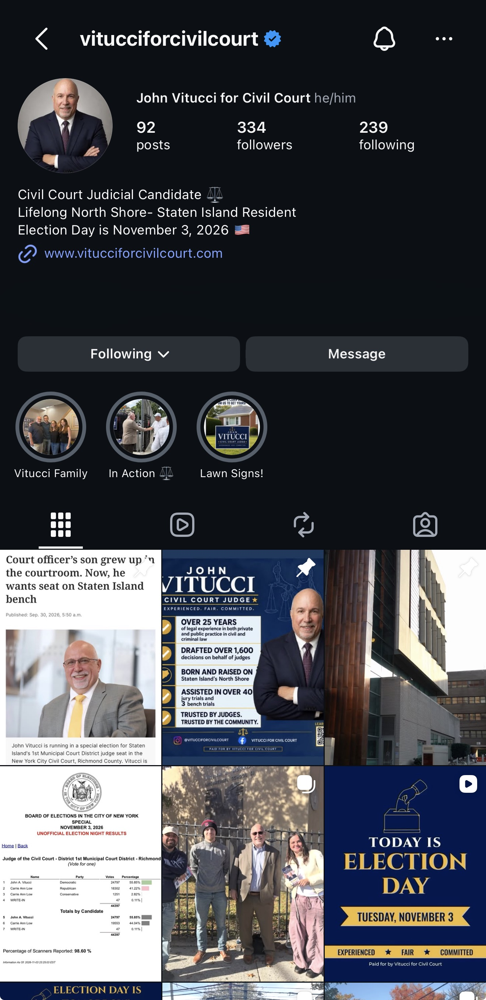
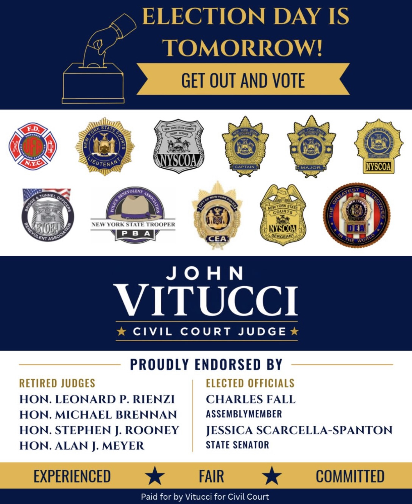

Published Work
Here are some projects I've worked on through my classes at Newhouse, internships, and other experiences.
Political Campaign & Social Media
During John Vitucci's campaign for Civil Court Judge, I helped manage his social media presence by creating graphics, writing captions and developing content to connect with Staten Island voters.
Instagram Campaign

Campaign Graphic

Broadcast Journalism
Here is a newscast I worked on for my BDJ 312 class at Syracuse University.